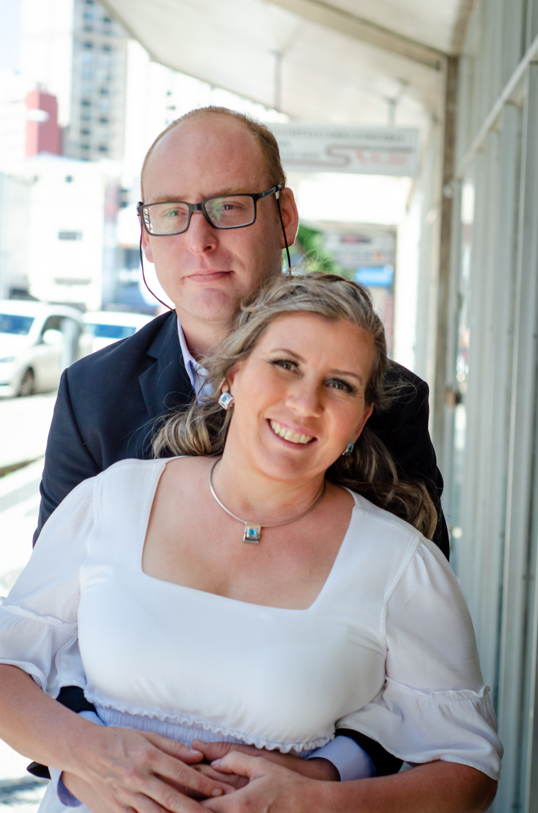
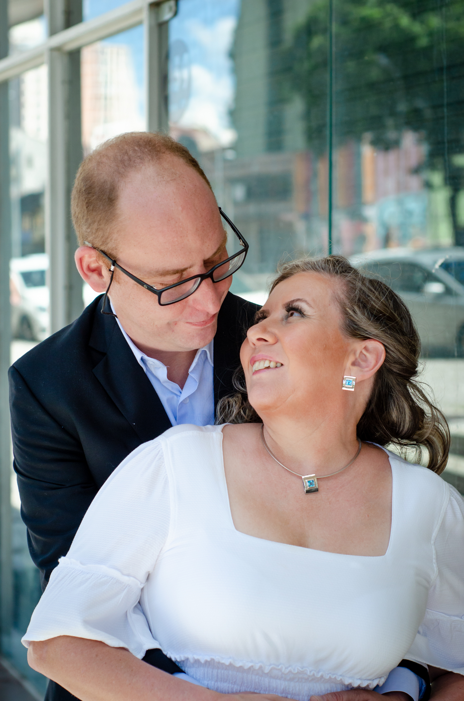
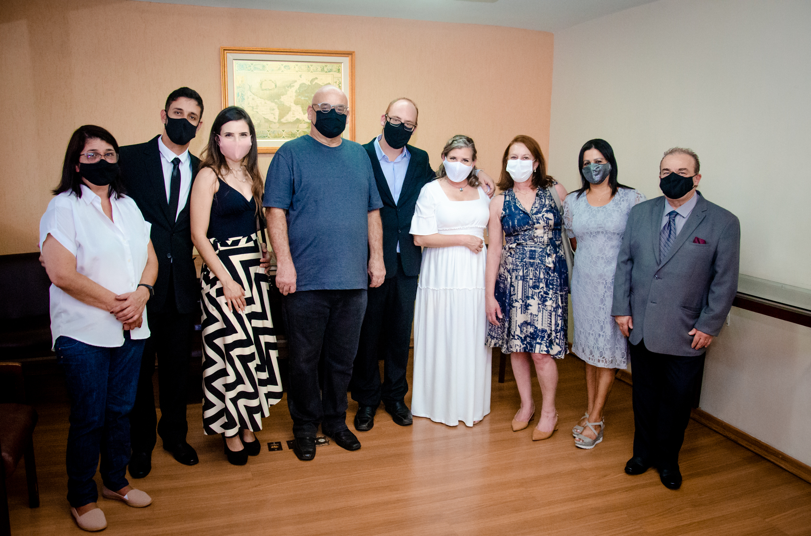
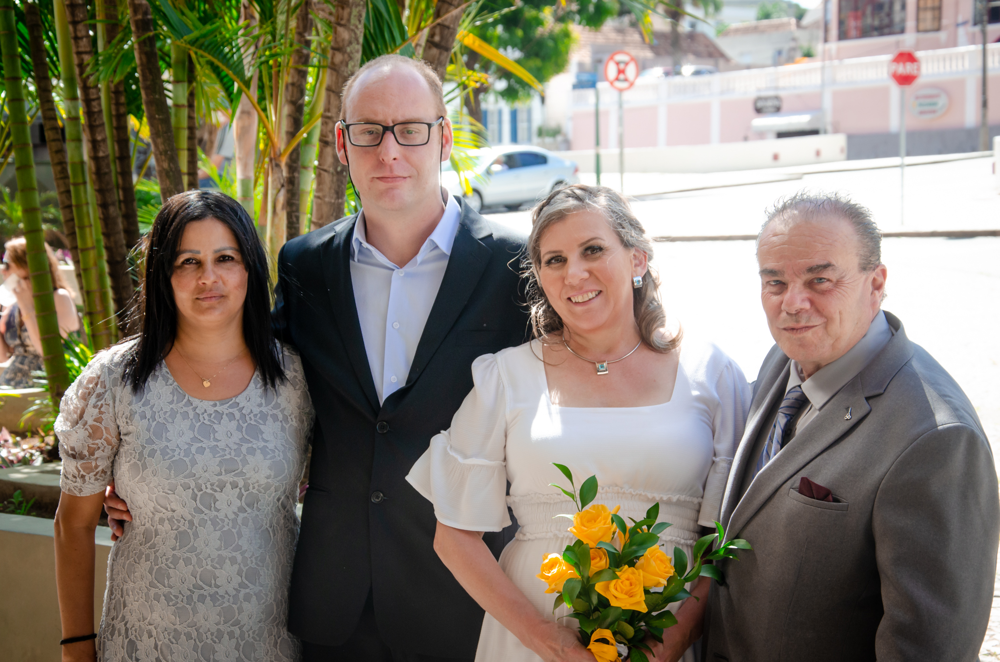
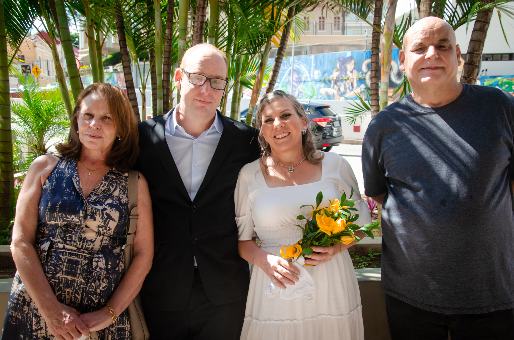
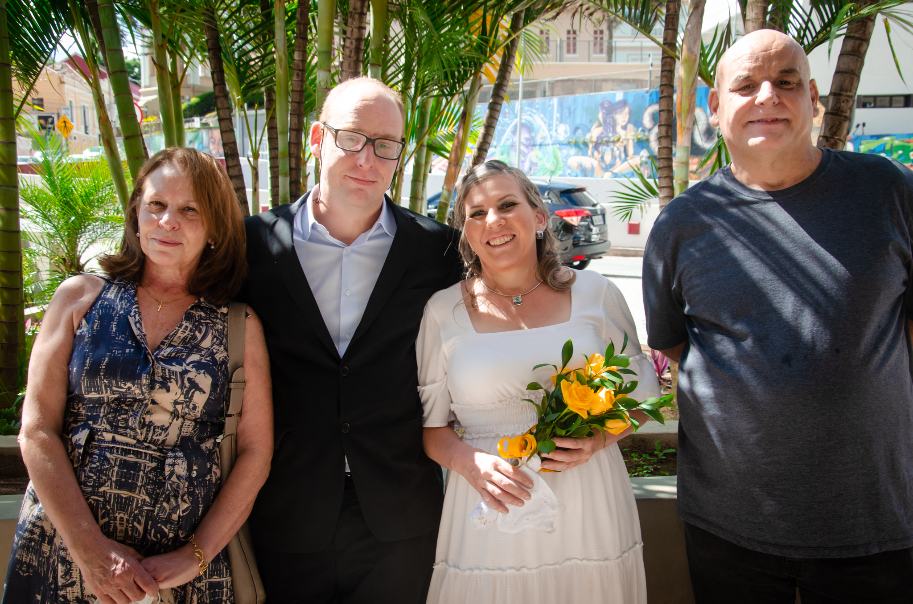
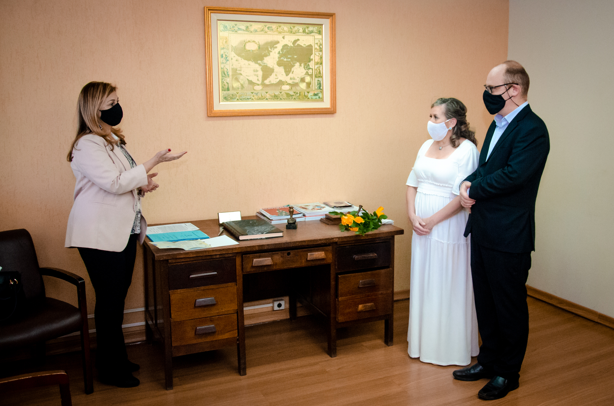

O casamento ocorreu no Cartório Leão, em uma região suja da cidade de Curitiba em uma tarde de muito calor e em um período de grande estiagem e seca



Importante ressaltar o período pandêmico em que decidimos nos casar. Tivemos que ficar um longo período fora do cartório. Debaixo do sol e do calor. O uso de máscaras era obrigatório e a Juiza de Paz atrasou uma hora e meia. Uma curiosidade, outro casamento ocorreria em mesma data e de um homônimo meu. Ele também se chamava Rodrigo


 

Amigos e familiares se fizeram presentes
E na hora de assinar o documento e de trocar as alianças, aquele nervosismo. Lembro-me que a cada cinco segundos eu mexia no bolso, verificando se as alianças ainda estavam lá, se meu bolso não estava furado, se não havia perdido uma delas.
